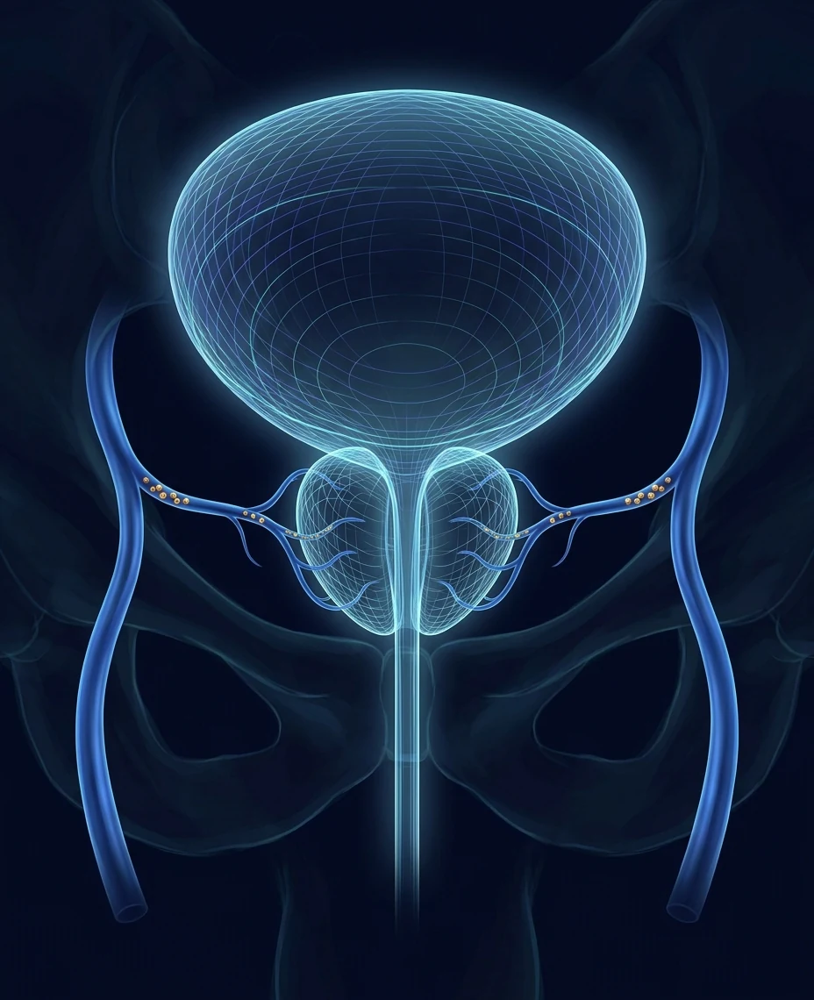

PAE vs TURP,
compared honestly
TURP has been the benchmark operation for an enlarged prostate for decades. PAE treats the same problem without an operation at all. Because Dr. Sawkar offers the full range of BPH treatments, this comparison is a menu, not a pitch.

The honest answer
TURP, transurethral resection of the prostate, removes the obstructing tissue with an instrument passed through the urethra. It is done under spinal or general anesthesia, usually with a night in the hospital and a catheter for a few days afterward. Decades of results make it the standard every newer treatment is measured against.
PAE, prostatic artery embolization, treats the same blockage without touching the urethra. Through a pinhole in the wrist or groin, tiny microspheres reduce the prostate's blood supply and the gland shrinks over the following weeks. There is no general anesthesia, most men go home the same day and are back to their routine in about a day, and it works across the full range of prostate sizes.
The trade is straightforward. TURP buys the most proven, most durable single-procedure result at the cost of an operation, a hospital stay, a catheter, and dry ejaculation in most men. PAE offers the gentlest path through treatment, accepting a somewhat higher chance of needing another treatment years later. Both relieve symptoms well for most men.
Side by side
| PAE | TURP | |
|---|---|---|
| Setting | Outpatient, home the same day | Hospital, usually one night |
| Anesthesia | Light sedation | Spinal or general |
| How it reaches the prostate | Through a wrist or groin artery, no instruments in the urethra | A resectoscope passed through the urethra |
| Catheter afterward | Usually none | Typically one to three days |
| Back to routine | About a day | Light activity in days, full activity over several weeks |
| When symptoms improve | Gradually, over 4 to 12 weeks | Quickly, once healing settles |
| Ejaculation | Changes are uncommon | Dry ejaculation in most men |
| Durability | Strong, though some men choose a second treatment years later | The most durable single-procedure track record |
| Very large prostates | Effective across sizes, including very large glands | Very large glands often need a different operation |
| Blood thinners | Often no need to stop them | Usually must be interrupted |
General patterns, not a promise. Anatomy, medications, and your goals can shift the picture, which is what the consultation sorts out.
When TURP genuinely wins
There are men for whom resection is simply the right call. When it is, Dr. Sawkar will say so, and will also walk you through Aquablation, the robotic waterjet successor to TURP that he performs at Providence St. Joseph.
Maximum single-procedure durability
Decades of follow-up data and the lowest long-term retreatment rates of any BPH procedure.
Severe retention
When the bladder is failing or catheter-dependent, immediate and maximal opening of the channel can be the priority.
Combined problems
Bladder stones and certain other findings can be treated endoscopically in the same session.
After other treatments
When a prior minimally invasive treatment has not done enough, resection is the definitive next step.
When PAE genuinely wins
No operation, no general anesthesia
For men who want relief without a hospital stay, a urethral instrument, or a catheter.
Blood thinners and surgical risk
PAE often proceeds without interrupting anticoagulation, and suits men who are not good surgical candidates.
Very large prostates
PAE works across the full size range, including glands too large for a standard TURP.
Ejaculation matters to you
Dry ejaculation is common after TURP and uncommon after PAE. For many men this is the deciding factor.
Common questions
Is PAE as effective as TURP
In head-to-head studies TURP produces larger improvements in urinary flow measurements and holds up longer on average. Most men after PAE still get meaningful, lasting symptom relief, with a far gentler recovery. The real question is which trade-off fits your anatomy, health, and priorities.
Can I still have TURP later if PAE is not enough
Yes. PAE closes no doors. If symptoms return or the response is not enough, TURP, Aquablation, and the other options remain fully available.
Which one is safer
They have different risk profiles rather than one being categorically safer. PAE avoids general anesthesia, surgical bleeding, and urethral injury; its own risks relate to the artery access and a few days of irritative urinary symptoms. TURP's risks include bleeding, dry ejaculation, and scar tissue in the urethra. Serious complications are uncommon with both in experienced hands.
Does insurance cover both
Both PAE and TURP are typically covered by Medicare and most commercial insurance plans. The office verifies your specific coverage before anything is scheduled.
Compare them in one visit
One consultation covers both paths honestly, with your imaging and medications on the table. Same-day and next-day appointments are available, and telehealth makes the first conversation easy. For the fastest response, send the office a secure message; the reply comes back by text.
Chief of Urology, Providence St. Joseph Hospital · UroLift Center of Excellence · Orange County's highest-volume Aquablation surgeon